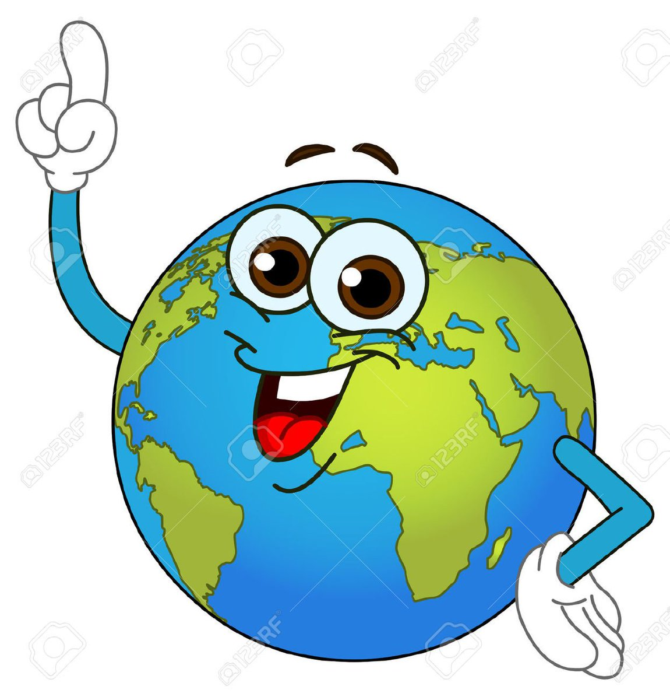

Medio ambiente
Medio ambiente
30/09/2022
Contexto
Se entiende por contaminación ambiental cuando existe la presencia de sustancias nocivas en el agua, aire o suelo. Las sustancias nocivas son lo que llamamos contaminantes ambientales, pudiendo tener diferente origen. Además, se encuentran en diferentes concentraciones y en diferentes lugares.
Desarrollo
Tipos de contaminación según el medio afectado Hay tres tipos de contaminación según el medio en el que actúa el contaminante: Contaminación atmosférica o ambiental. Consiste en la liberación de sustancias químicas a la atmósfera que alteran su composición. Supone un grave riesgo para la salud de todos los seres vivos. Contaminación hídrica o del agua. Se debe a la presencia de desechos en el agua. La contaminación de mares, ríos y lagos se produce por las actividades del ser humano y es foco de infecciones. Contaminación del suelo. Como los dos anteriores tipos de contaminación, se debe a la acción humana (los residuos y la basura arrojada en cualquier superficie terrestre).
Motivación
Escogí este tema ya que es muy controversial, y es algo de lo qque me gusta hablar, y conover las opiniones de otras personas, y que tambien conozcan mis puntos de vista, y tambien para informarme del tema
Investigacion
ContaminacionYo como joven no puedo hacer mucho para evitar contaminación pero minimo puedo poner mi granito de arena para hacer de este mundo algo mejor, investigue varias forma de lograrlo y la primera es no desperdiciando agua, ni luz eo genera un poco de contaminacion, estamos a tiempo de poner nuestro grano de arena